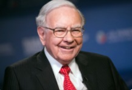

워런 버핏(WarrenBuffett)

프로필
- 출생 : 1930. 8. 30. 미국
- 나이 : 92세, 만91세
- 소속 : 버크셔 해서웨이(CEO)
- 가족 : 배우자, 2남1녀
- 사이트 : 버크셔해서웨이,
트위터
학력사항
- 1947~1949 : 펜실베이니아대학교 와튼스쿨, 우드로윌슨고등학교
- ~1950 : 네브래스카대학교 링컨캠퍼스 학사
- ~1951 : 컬럼비아대학교 대학원 경제학 석사
수상내역
- 미국 타임지 세계에서 가장 영향력 있는 100인
- 미국 대통령 자유 메달
경력사항
- 1961 : 뎀스터 밀 회장
- 1974~1986 : 워싱턴 포스트 이사회 이사
버크셔 해서웨이 CEO
- 1987 : 샐리먼 브라더스 이사회 이사
- 1989~2006 : 코카콜라 이사회 이사
- 1996~2011 : 워싱턴 포스트 이사회 이사
- 2006 : 빌 앤 멜린다 게이츠 재단 이사회 이사